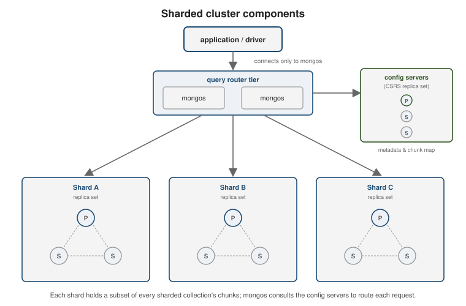
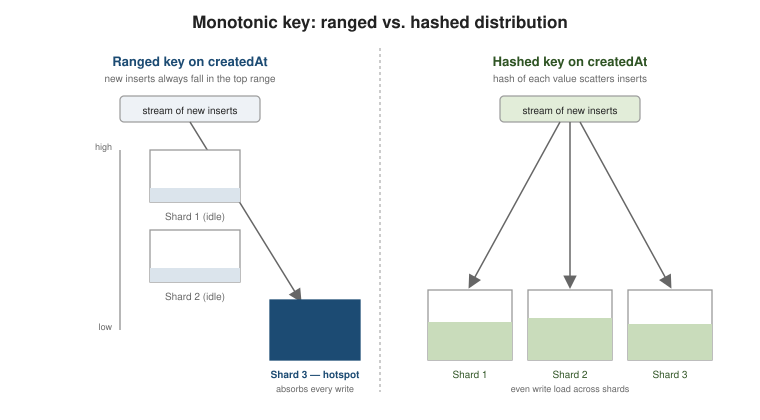
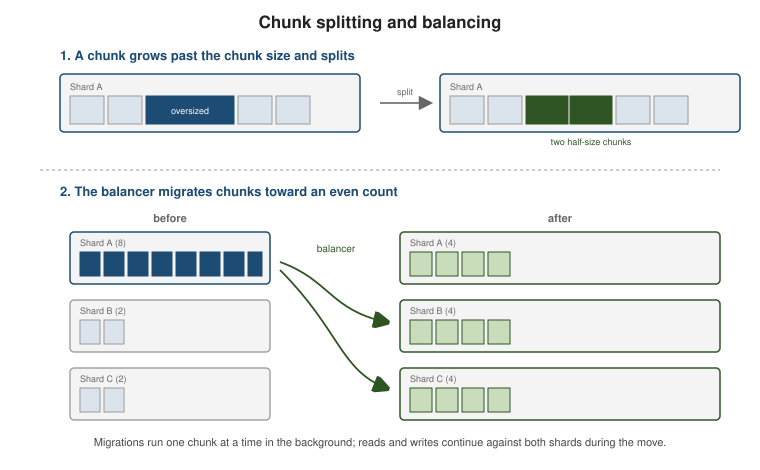

Horizontal scaling with sharded clusters
|
This content was generated with the assistance of AI and should be verified against the official documentation before being relied on in production. |
Sharding partitions one collection’s documents across several independent servers so that data volume and write throughput can grow past what a single replica set handles. The application does not address shards directly: it talks to a router that knows, from the shard key, where every document lives. This page covers the cluster’s parts, the kinds of shard key, how to pick one, and the balancer that keeps chunks evenly spread.
Cluster components
A sharded cluster has three kinds of process:
-
Shards — each shard is a full replica set (see Replica sets & high availability) and holds a subset of the sharded data. Non-sharded collections all live on one shard, the database’s primary shard.
-
mongosrouters — stateless query routers. A client connects to amongos, which reads the shard key from each query, consults the routing table, and forwards the operation to just the shard(s) that can hold matching documents, merging their replies. -
Config servers — a dedicated replica set (the CSRS) that stores cluster metadata: the list of shards, the chunk ranges, and zone definitions.
mongoscaches this and refreshes it when it changes.

mongodb://mongos1:27017,mongos2:27017/shop?retryWrites=true&w=majorityA client always uses a mongos connection string, never a shard’s own. See
Sharding for the full architecture.
The running example: a two-shard cluster
The examples on this page were run against the smallest cluster that still has every moving part: a config-server
replica set (one member here), two shards (each a one-member replica set here; production shards have at least
three members), and one mongos. On a private Docker network:
docker network create sh-demo
docker run -d --name cfg --network sh-demo mongo:8 mongod --configsvr --replSet cfgrs --bind_ip_all
docker run -d --name sh1 --network sh-demo mongo:8 mongod --shardsvr --replSet shard1rs --bind_ip_all
docker run -d --name sh2 --network sh-demo mongo:8 mongod --shardsvr --replSet shard2rs --bind_ip_all
docker exec cfg mongosh --quiet --port 27019 --eval \
'rs.initiate({ _id: "cfgrs", configsvr: true, members: [{ _id: 0, host: "cfg:27019" }] })'
docker exec sh1 mongosh --quiet --port 27018 --eval \
'rs.initiate({ _id: "shard1rs", members: [{ _id: 0, host: "sh1:27018" }] })'
docker exec sh2 mongosh --quiet --port 27018 --eval \
'rs.initiate({ _id: "shard2rs", members: [{ _id: 0, host: "sh2:27018" }] })'
docker run -d --name mongos --network sh-demo -p 27017:27017 \
mongo:8 mongos --configdb cfgrs/cfg:27019 --bind_ip_all
docker exec mongos mongosh --quiet --eval '
sh.addShard("shard1rs/sh1:27018"); sh.addShard("shard2rs/sh2:27018")'--configsvr and --shardsvr select the role and change the default port (27019 and 27018). The shards are
registered with sh.addShard() through the mongos, which is the only address applications ever use. sh.status()
on the new cluster lists the two shards, the balancer (enabled, nothing to move yet) and an empty database list:
shards
[ { _id: 'shard1rs', host: 'shard1rs/sh1:27018', ... },
{ _id: 'shard2rs', host: 'shard2rs/sh2:27018', ... } ]
---
balancer
{ 'Currently enabled': 'yes', 'Currently running': 'no', 'Migration Results for the last 24 hours': 'No recent migrations' }Enabling sharding on a collection
Sharding is opt-in per collection. Enable it for the database, then shard the collection on a key; the key fields must be backed by an index (see Indexes).
// https://www.mongodb.com/docs/manual/reference/method/sh.shardCollection/
sh.enableSharding("shop")
// ranged key
db.orders.createIndex({ customerId: 1, orderDate: 1 })
sh.shardCollection("shop.orders", { customerId: 1, orderDate: 1 })
// hashed key
db.events.createIndex({ _id: "hashed" })
sh.shardCollection("shop.events", { _id: "hashed" })Shard keys
The shard key is one or more indexed fields whose value decides which chunk — and therefore which shard — a document belongs to.
-
Ranged (
{ field: 1 }) — documents are ordered by the key and split into contiguous ranges. Range queries on the key hit only the shards covering that range, but a key whose values keep increasing sends every new document to the same range. -
Hashed (
{ field: "hashed" }) — MongoDB hashes the key value and ranges over the hash. Inserts spread evenly even when the underlying value is monotonic, at the cost of range queries, which must now scatter to every shard. -
Compound (
{ a: 1, b: 1 }) — ranged over the fields in order; a high-cardinality second field can rescue a low-cardinality first field.
A chunk is a contiguous span of the key space owned by one shard. A chunk that grows past the configured chunk size (default 128 MB) is split, and the balancer migrates whole chunks between shards. A collection starts as a single chunk covering the entire key range and accumulates more as data grows.

What the shard key buys: targeted and scatter-gather queries
The router can only send a query to one shard when the filter contains the shard key (or a prefix of it). Anything
else is broadcast to every shard and the results are merged. explain() shows which of the two happened. On the
example cluster, with shop.orders sharded on { customerId: 1, orderDate: 1 } and 60,000 orders loaded:
function plan(q) {
const w = db.getSiblingDB("shop").orders.find(q).explain().queryPlanner.winningPlan;
return w.stage + " " + JSON.stringify(w.shards.map(s => s.shardName));
}
plan({ customerId: 42 }) // SINGLE_SHARD ["shard2rs"]
plan({ customerId: 42, orderDate: { $gte: ISODate("2023-12-01") } }) // SINGLE_SHARD ["shard2rs"]
plan({ status: "OPEN" }) // SHARD_MERGE ["shard2rs","shard1rs"]
plan({ customerId: { $gte: 100, $lte: 1900 } }) // SHARD_MERGE ["shard2rs","shard1rs"]The first two filters are targeted: mongos consults the chunk table and contacts one shard. Filtering on a
field that is not in the key (status) is scatter-gather, and so is a range wide enough to span several chunks
(customerId between 100 and 1900 crosses both shards). Scatter-gather works, but its cost grows with the number
of shards, which is why query isolation is one of the criteria for choosing a key (see below).
The shard key value of a document may be changed by an update since MongoDB 4.2 (the update must run as a
retryable write or inside a transaction; on the 8.x example cluster, a mongosh updateOne that moved an order
from customerId: 5 to 6 succeeded), but the set of fields in the shard key is fixed once the collection is
sharded. You can only refine it — append more fields with sh.refineCollectionShardKey() — or change it
wholesale by resharding (below).
// https://www.mongodb.com/docs/manual/reference/method/sh.refineCollectionShardKey/
db.orders.createIndex({ customerId: 1, orderDate: 1, _id: 1 })
sh.refineCollectionShardKey("shop.orders", { customerId: 1, orderDate: 1, _id: 1 })On the example cluster config.collections then reports the key as {"customerId":1,"orderDate":1,"_id":1}.
Refining is cheap because no data moves; it only makes chunks splittable at finer granularity, which is the cure
for "jumbo" chunks caused by a low-cardinality prefix.
Choosing a shard key
A good key spreads both storage and, especially, writes evenly, while still letting common queries target a single shard. Judge a candidate on:
-
High cardinality — many distinct values, so the key space can be divided into many chunks.
countryCodecaps the cluster at ~200 chunks;userIddoes not. -
Low frequency — no single value dominates. If 40% of documents share one key value, that value’s chunk cannot be split and its shard becomes a hotspot regardless of cardinality.
-
Non-monotonic — a key that always increases (
ObjectId, a timestamp, an auto-increment counter) makes the highest chunk the target of every insert; that one chunk and shard take the entire write load while the others sit idle. This is the ascending shard key problem. Either put a hashed key on the monotonic field, or lead the compound key with a well-distributed field. -
Query isolation — the fields your frequent queries filter on should be in the key, so
mongosroutes those queries to one shard instead of scattering to all of them.
// https://www.mongodb.com/docs/manual/core/sharding-choose-a-shard-key/
// createdAt alone: monotonic -> insert hotspot on the last shard
// { deviceId: 1, createdAt: 1 }: writes spread across devices, and
// time-range queries for one device still hit a single shard
db.readings.createIndex({ deviceId: 1, createdAt: 1 })
sh.shardCollection("iot.readings", { deviceId: 1, createdAt: 1 })
// pure write-scatter with no natural partition field: hash the id
db.audit.createIndex({ _id: "hashed" })
sh.shardCollection("iot.audit", { _id: "hashed" })Measuring the monotonic-key problem
The ascending-key problem can be reproduced in a few lines. Two collections hold the same 60,000 documents with an
ever-increasing seq field (about 250 bytes each); one is sharded on { seq: 1 }, the other on
{ seq: "hashed" }. $shardedDataDistribution reports how many documents each shard really owns (not counting
orphans left over from migrations):
sh.shardCollection("shop.ledger", { seq: 1 })
sh.shardCollection("shop.ledger_h", { seq: "hashed" })
// ... insert seq = 0 .. 59999 into both ...
function owned(ns) {
const c = db.getSiblingDB("admin")
.aggregate([{ $shardedDataDistribution: {} }, { $match: { ns } }]).toArray()[0];
return Object.fromEntries(c.shards.map(s => [s.shardName, s.numOwnedDocuments]));
}After the balancer had spread the initial 60,000 documents, a further 20,000 inserts with seq 60000 to 79999
went to both collections:
| Collection | Owned documents before | After 20,000 more inserts |
|---|---|---|
|
shard 1: 34,014, shard 2: 25,986 |
shard 1: 54,014, shard 2: 25,986 |
|
shard 1: 29,549, shard 2: 30,451 |
shard 1: 39,638, shard 2: 40,362 |
Every one of the 20,000 new documents of the ranged collection landed on shard 1 (the shard that owns the open
upper chunk, from seq to MaxKey), while the hashed collection received almost exactly half on each shard. This
is the whole difference between a hotspot and an even write load, and it does not depend on how many shards there
are: with ten shards the ranged collection would still write to exactly one of them.
The balancer, zones, and resharding
The balancer is a background process on the config server primary. It watches the chunk count per shard and, when the gap between the most- and least-loaded shard exceeds a threshold, migrates one chunk at a time from the fuller shard to the emptier one until the counts even out. Reads and writes continue against both shards during a migration.

What the balancer actually did on the example cluster is visible in config.chunks. Right after the 60,000 documents
were loaded with the balancer stopped, shop.ledger was still one chunk on shard 1 (all 60,000 documents there). When the
balancer was started it split the range and moved the lower chunks to the empty shard:
shop.ledger
MinKey -> 4331 shard2rs
4331 -> 8662 shard2rs
8662 -> 12993 shard2rs
12993 -> 17324 shard2rs
17324 -> 21655 shard2rs
21655 -> 25986 shard2rs
25986 -> MaxKey shard1rsThe open upper chunk (25986 -> MaxKey) stays where it was, and that is where all future ascending inserts go. For
the hashed collection the distribution was even from the first insert, because creating a hashed sharded
collection on an empty collection pre-splits it into chunks (here, one per shard) that already cover the whole
hash space.
Two details of that last step matter in practice. First, after a migration the donor keeps the documents as
orphans until the range deleter removes them, after orphanCleanupDelaySecs (15 minutes by default). Until then
$shardedDataDistribution reports them separately (numOrphanedDocuments), and collection-level counts from
$collStats double-count them. Second, a chunk cannot be moved back to a shard that still holds orphans of
the same range. In the zone experiment below, the balancer’s attempt failed and was logged in config.changelog
with the error "Migration failed because the orphans cleanup routine didn’t clear yet a portion of the range",
and simply retried later. If you need an immediate rebalance in a test, lower orphanCleanupDelaySecs on the
shards.
// https://www.mongodb.com/docs/manual/core/sharding-balancer-administration/
sh.status() // shards, databases, per-collection chunk distribution
sh.getBalancerState() // is balancing enabled
sh.startBalancer() / sh.stopBalancer()
sh.disableBalancing("shop.orders") // freeze one collection, e.g. during a bulk loadZone sharding pins ranges of the shard key to named zones, and zones to shards, so documents physically land on chosen shards — used for data locality (keep EU customers on EU-hosted shards) or tiered hardware (recent data on SSD shards). The balancer then honours the zone ranges as well as the even-count goal.
The cleanest way to use zones is to define them before the collection is sharded and loaded, so that the very
first chunks are created on the right shards and nothing has to migrate. The example below pins EU customers to
shard 1 and US customers to shard 2 with a compound key that starts with region:
sh.addShardToZone("shard1rs", "EU");
sh.addShardToZone("shard2rs", "US");
sh.updateZoneKeyRange("shop.customers", { region: "EU", customerId: MinKey }, { region: "EU", customerId: MaxKey }, "EU");
sh.updateZoneKeyRange("shop.customers", { region: "US", customerId: MinKey }, { region: "US", customerId: MaxKey }, "US");
sh.shardCollection("shop.customers", { region: 1, customerId: 1 });
// 4,000 customers, one in three of them in the US
db.customers.insertMany(Array.from({ length: 4000 }, (_, i) =>
({ region: i % 3 == 0 ? "US" : "EU", customerId: i, name: "customer-" + i })));owned docs per shard: [["shard1rs", 2666], ["shard2rs", 1334]]
EU query: SINGLE_SHARD ["shard1rs"]
US query: SINGLE_SHARD ["shard2rs"]The 2,666 EU customers all live on shard 1 and the 1,334 US customers all on shard 2, and a query by region
and customerId is routed to exactly the shard that holds them. For data-sovereignty rules that is the point:
the documents of a region are physically on the hardware chosen for it. If you add zones to a collection that is
already loaded, the balancer moves the chunks to honour them, which can take a while (see the orphan remark
above).
// https://www.mongodb.com/docs/manual/core/zone-sharding/
sh.addShardToZone("shard-eu", "EU")
sh.updateZoneKeyRange(
"shop.orders",
{ countryCode: "AT", customerId: MinKey },
{ countryCode: "DE", customerId: MaxKey },
"EU"
)Resharding rebuilds a sharded collection under a completely new shard key. reshardCollection copies the
data into a new distribution in the background and does a brief cutover at the end; the collection stays
readable and writable throughout. It is the escape hatch when a shard key turns out to be a bad choice.
// https://www.mongodb.com/docs/manual/core/sharding-reshard-a-collection/
db.adminCommand({
reshardCollection: "shop.orders",
key: { customerId: "hashed" }
})On the example cluster shop.ledger (80,000 documents) was resharded from { seq: "hashed" } to { seq: 1 }:
before: {"seq":"hashed"} [["shard1rs",39638],["shard2rs",40362]]
reshardCollection ok = 1 (334 s for 80000 documents)
after: {"seq":1} [["shard2rs",40298],["shard1rs",39702]]The command returned only after the whole operation finished, and it took 334 seconds for a few megabytes. That is
not slowness: a resharding operation stays in its catch-up phase for at least
reshardingMinimumOperationDurationMillis (five minutes by default) so that the final cutover can be short, which
also makes it the wrong tool for a quick experiment. While it runs, $currentOp reports the recipient shards in the
cloning state with documentsCopied against approxDocumentsToCopy and a remainingOperationTimeEstimatedSecs,
and the donor shards in donating-initial-data.
Two practical rules follow. First, reshard with plenty of free disk, because both copies exist until the end. Second,
a collection that already has zones needs an explicit zones field in the command (omitting it fails with "Must
specify value for zones field"), since the new key may need different zone ranges.